Les lignes invisibles du Bénin
Court-métrage · environ 1 min · en finalisation
Un court-métrage poétique sur les lignes invisibles qui relient le Bénin à sa mémoire, ses générations et son identité, malgré les ruptures de l’Histoire.
Artiste visuel basé à Montréal, né en Côte d’Ivoire et d’origine béninoise. Sa pratique explore l’identité, la mémoire, la migration et la coexistence.
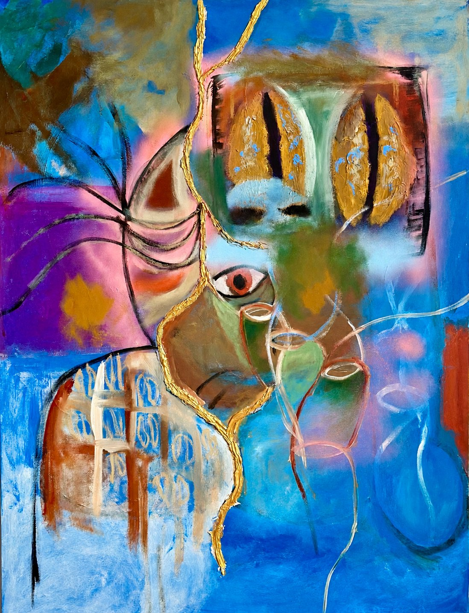
Sans titre 1
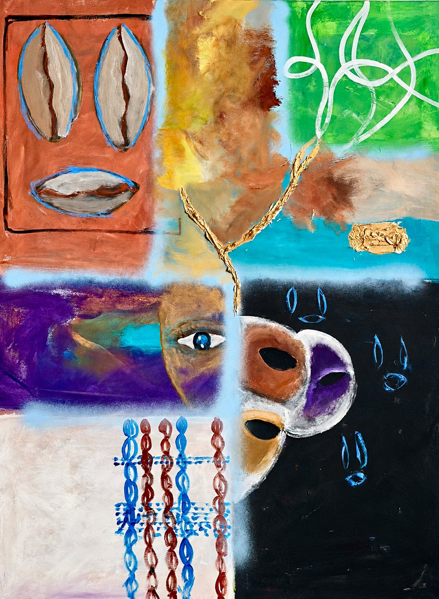
Sans titre 2
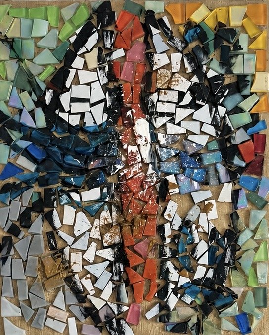
Sans titre 3
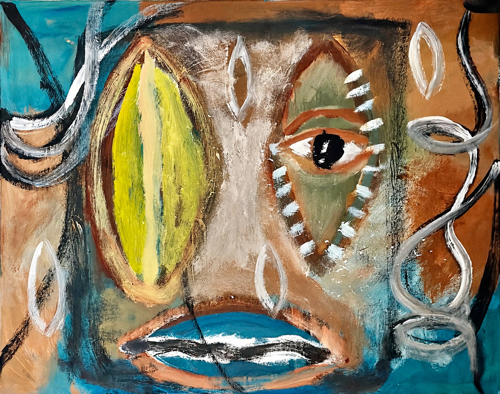
Sans titre 4
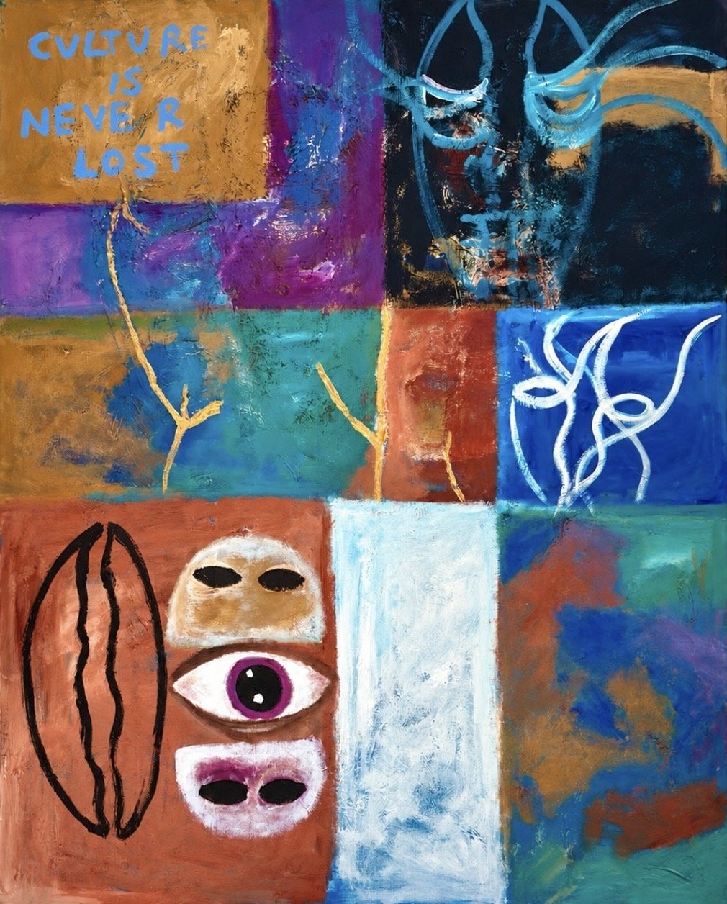
Sans titre 5
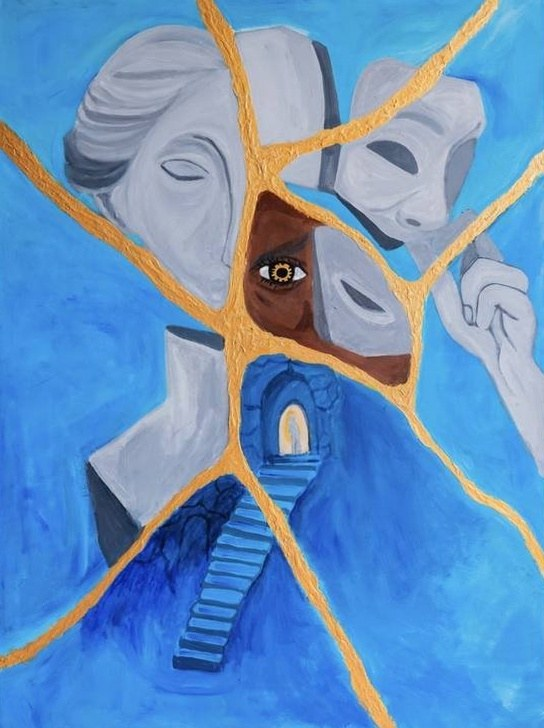
Traversée intérieure, 2024
Technique mixte sur toile
36 × 48 po
Dans Traversée intérieure, l'artiste explore les différentes couches qui composent notre identité et invite à un voyage vers l'intérieur de soi.
Les masques représentent les identités que nous portons au fil de notre existence : celles que nous construisons, celles que nous héritons, mais aussi celles que le regard des autres nous impose. Derrière ces différentes apparences, l'œil symbolise la conscience, ce regard intérieur qui demeure et questionne qui nous sommes réellement.
L'escalier devient alors le symbole de cette traversée : un chemin qui nous pousse à aller au-delà des apparences, à franchir nos propres couches et à nous confronter à notre multiplicité. Au bout, la lumière n'apporte pas une réponse définitive, mais ouvre la possibilité d'une meilleure compréhension de soi.
Les lignes dorées relient l'ensemble de ces fragments, rappelant que nos différentes identités ne s'opposent pas nécessairement : elles coexistent et participent toutes à ce que nous sommes.
Parce que le vrai voyage commence en nous.
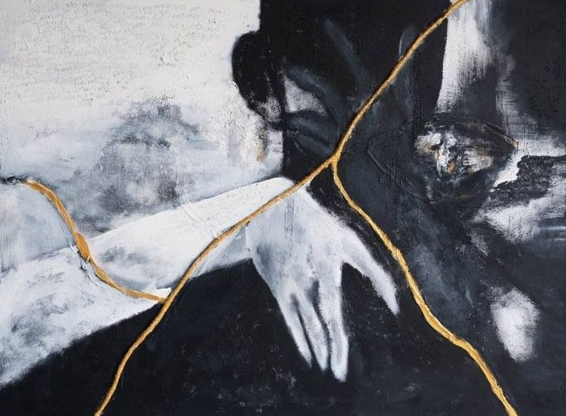
What connect us, 2024
Technique mixte sur toile
36 × 48 po
What Connects Us met en scène deux êtres, deux réalités, deux façons d'exister. Ils peuvent être différents, parfois même opposés, mais quelque chose continue de les relier.
La ligne dorée matérialise ce lien. Elle ne cherche pas à effacer les différences ni à faire des deux êtres une seule identité. Elle affirme au contraire qu'une relation peut exister sans que l'un ait à devenir l'autre.
L'œuvre parle ainsi d'acceptation : je te vois dans ta différence, je reconnais ce qui nous sépare, et pourtant je choisis ce qui nous relie.
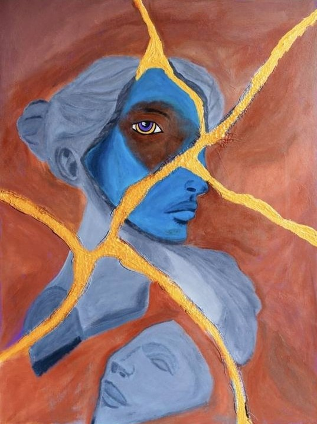
Sans titre, 2024
Technique mixte sur toile
24 × 36 po
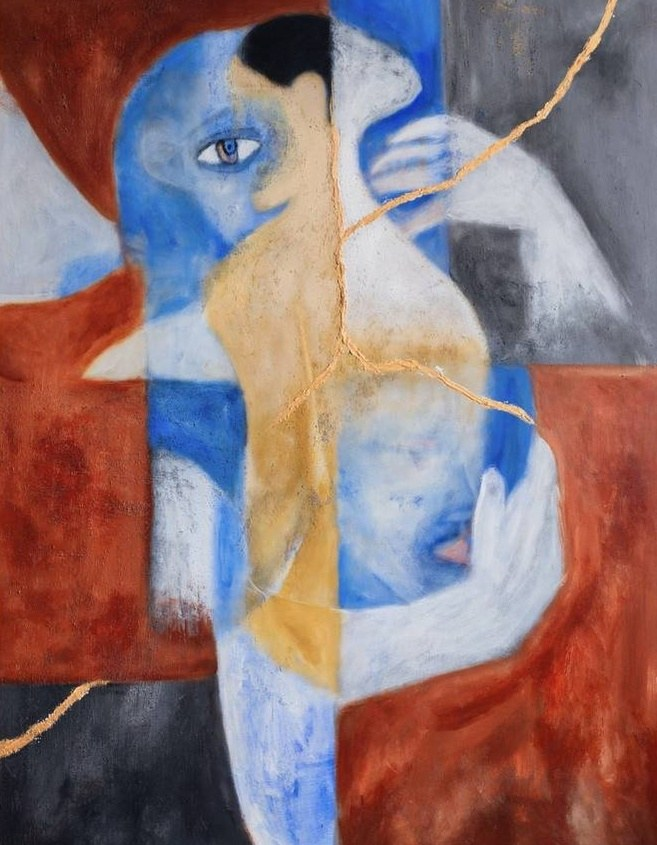
The Lady and her Multiplicities, 2025
Technique mixte sur toile
36 × 48 po
Dans The Lady and Her Multiplicities, l'artiste explore la multiplicité de l'identité à travers une figure féminine qui semble exister sous plusieurs formes à la fois.
Les visages, les regards et les fragments de corps se superposent et se confondent, révélant les différentes versions d'une même personne : celle que l'on montre, celle que les autres perçoivent, celle que l'on a été et celle que l'on devient.
Plutôt que de chercher à définir une identité unique, l'œuvre invite à accepter la coexistence de ces différentes facettes. Les lignes dorées traversent et relient les fragments, créant un fil entre ces multiples présences.
Une seule personne peut contenir plusieurs identités, plusieurs histoires, plusieurs façons d'être au monde.
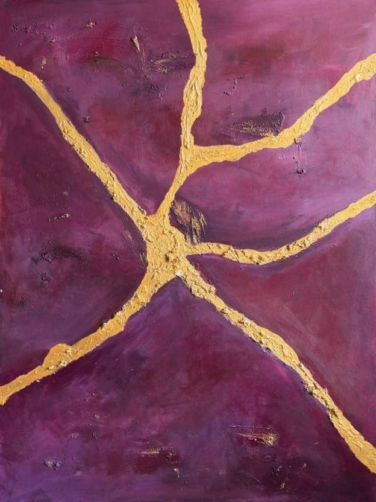
Golden Lines I, 2024
Technique mixte sur toile
36 × 48 po
Représentation abstraite du concept de lignes dorées.
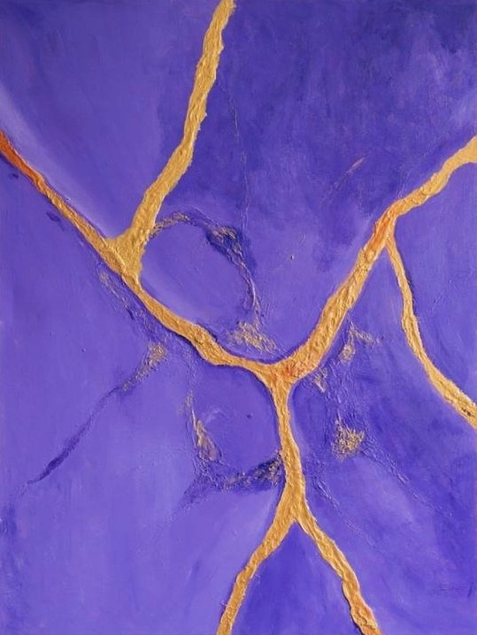
Golden Lines II, 2024
Technique mixte sur toile
36 × 48 po
Représentation abstraite du concept de lignes dorées.
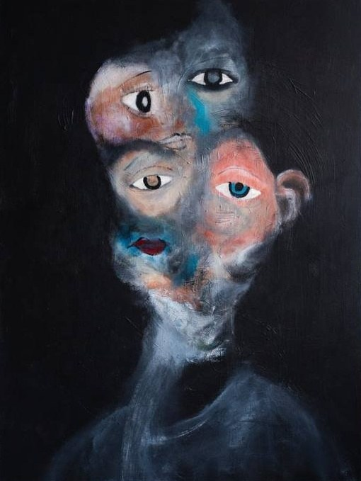
It is Me, 2026
Acrylique et huile sur toile
30 × 40 po
It Is Me explore la multiplicité de l'identité et la manière dont plusieurs versions de soi peuvent coexister au sein d'un même individu.
Les visages se superposent, se fragmentent et se confondent jusqu'à former une seule présence. Chaque regard semble appartenir à une identité différente, comme autant de facettes, de souvenirs et d'expériences qui participent à la construction de soi.
À travers cette accumulation de visages, l'artiste questionne l'idée d'une identité unique et figée. L'œuvre invite à parcourir les différentes couches qui nous composent et à se demander : parmi toutes ces versions de moi, laquelle est véritablement moi ?
It Is Me ne cherche pas nécessairement une réponse. Elle suggère plutôt que l'identité se trouve peut-être justement dans cette multiplicité : je suis chacun de ces fragments, et leur coexistence forme ce que je suis.
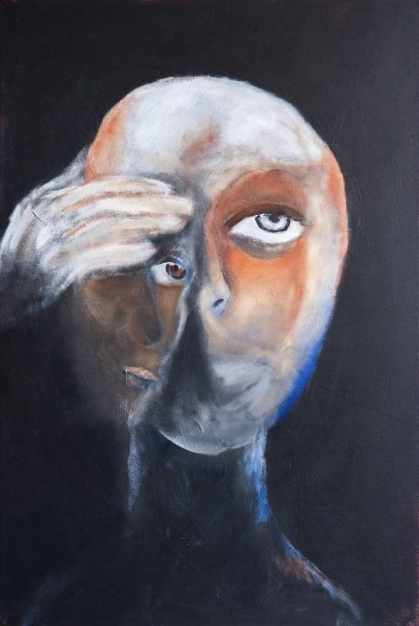
Toi, Moi ou Nous, 2025
Acrylique et huile sur toile
24 × 36 po
Toi, moi, nous explore l'identité à travers la rencontre avec l'autre.
Deux présences semblent habiter un même visage. Elles se superposent, se traversent et se transforment mutuellement, brouillant progressivement la frontière entre ce qui appartient à soi et ce qui vient de l'autre.
L'artiste interroge ainsi la manière dont notre identité se construit aussi dans nos relations, nos héritages et les personnes qui traversent notre existence. Une partie de l'autre demeure en nous, tout comme une partie de nous existe dans le regard de l'autre.
L'œuvre invite alors à questionner cette frontière : où finit le « toi », où commence le « moi », et à quel moment devenons-nous « nous » ?
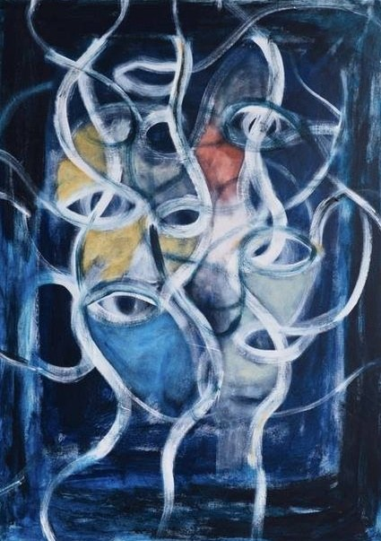
Identity multiplicity Blue Painting, 2026
Acrylique et huile sur toile
30 × 40 po
Dans cette œuvre, l'artiste explore le chemin que l'on emprunte à travers nos différentes identités pour se découvrir.
Les visages se superposent, se croisent et émergent de la matière comme autant de facettes d'un même être. Ils évoquent les identités dont nous héritons, celles que nous construisons et celles que nous découvrons au fil de notre existence.
À travers ces multiples visages se déploie ONA — le chemin, un langage graphique créé par l'artiste. Il traverse la composition comme une trajectoire intérieure, symbolisant le parcours que chacun entreprend à travers les différentes couches de son identité pour mieux se comprendre.
L'œuvre invite ainsi à considérer l'identité non comme quelque chose de fixe, mais comme un chemin de découverte de soi, où chaque fragment, chaque expérience et chaque identité participe à la compréhension de qui nous sommes.
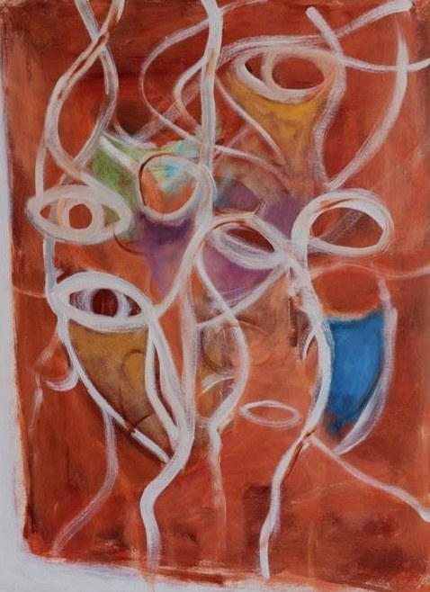
Identity multiplicity Red Painting, 2026
Acrylique et huile sur toile
30 × 40 po
Dans cette œuvre, l'artiste explore le chemin que l'on emprunte à travers nos différentes identités pour se découvrir.
Les visages se superposent, se croisent et émergent de la matière comme autant de facettes d'un même être. Ils évoquent les identités dont nous héritons, celles que nous construisons et celles que nous découvrons au fil de notre existence.
À travers ces multiples visages se déploie ONA — le chemin, un langage graphique créé par l'artiste. Il traverse la composition comme une trajectoire intérieure, symbolisant le parcours que chacun entreprend à travers les différentes couches de son identité pour mieux se comprendre.
L'œuvre invite ainsi à considérer l'identité non comme quelque chose de fixe, mais comme un chemin de découverte de soi, où chaque fragment, chaque expérience et chaque identité participe à la compréhension de qui nous sommes.
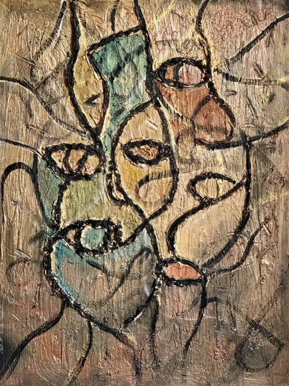
Identity multiplicity Bronze effect, 2026
Technique mixte sur toile
30 × 40 po
Dans cette œuvre, l'artiste explore le chemin que l'on emprunte à travers nos différentes identités pour se découvrir.
Les visages se superposent, se croisent et émergent de la matière comme autant de facettes d'un même être. Ils évoquent les identités dont nous héritons, celles que nous construisons et celles que nous découvrons au fil de notre existence.
À travers ces multiples visages se déploie ONA — le chemin, un langage graphique créé par l'artiste. Il traverse la composition comme une trajectoire intérieure, symbolisant le parcours que chacun entreprend à travers les différentes couches de son identité pour mieux se comprendre.
L'œuvre invite ainsi à considérer l'identité non comme quelque chose de fixe, mais comme un chemin de découverte de soi, où chaque fragment, chaque expérience et chaque identité participe à la compréhension de qui nous sommes.
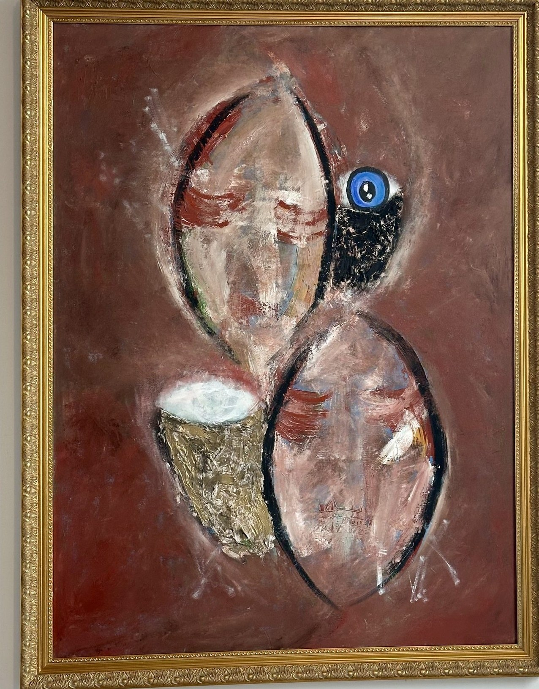
The Twins, 2026
Technique mixte sur toile, cadre antique
36 × 48 po
Les Twins s'inscrit dans la série Identity Multiplicity, qui explore les différentes identités coexistantes en chacun de nous. À travers la figure des jumeaux, l'artiste met en scène deux êtres issus d'une même origine, mais façonnés par des expériences et des trajectoires distinctes. Le cauri, placé comme un lien entre eux, symbolise la mémoire, l'héritage et la transmission. Les jumeaux deviennent ainsi le reflet d'une identité plurielle : semblable et différente, intime et héritée, unique et multiple à la fois.
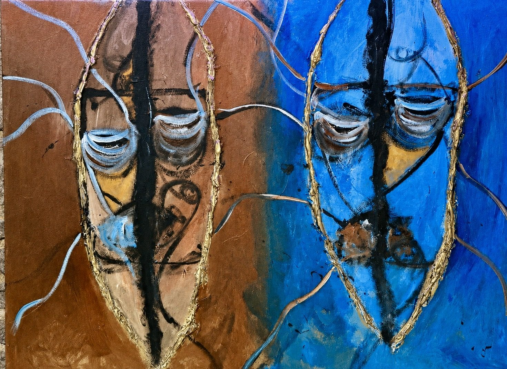
The Twins 2, 2026
Technique mixte sur toile, cadre antique
36 × 48 po
Les Twins s'inscrit dans la série Identity Multiplicity, qui explore les différentes identités coexistantes en chacun de nous. À travers la figure des jumeaux, l'artiste met en scène deux êtres issus d'une même origine, mais façonnés par des expériences et des trajectoires distinctes. Le cauri, placé comme un lien entre eux, symbolise la mémoire, l'héritage et la transmission. Les jumeaux deviennent ainsi le reflet d'une identité plurielle : semblable et différente, intime et héritée, unique et multiple à la fois.
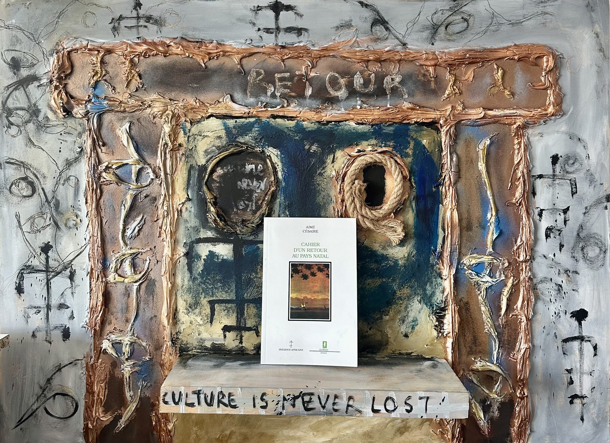
Retour
Œuvre installation, technique mixte
RETOUR explore la nécessité de revenir vers ses origines pour mieux comprendre ce que l'on devient. Au centre, le Cahier d'un retour au pays natal d'Aimé Césaire transforme l'œuvre en un espace de mémoire, de lecture et de transmission. Les yeux observent, cherchent et témoignent, tandis que la corde évoque les liens invisibles qui nous rattachent à notre histoire. Ici, le retour n'est pas un recul : c'est une reconquête de soi. Car même fragmentée, déplacée ou enfouie, une culture ne disparaît jamais.
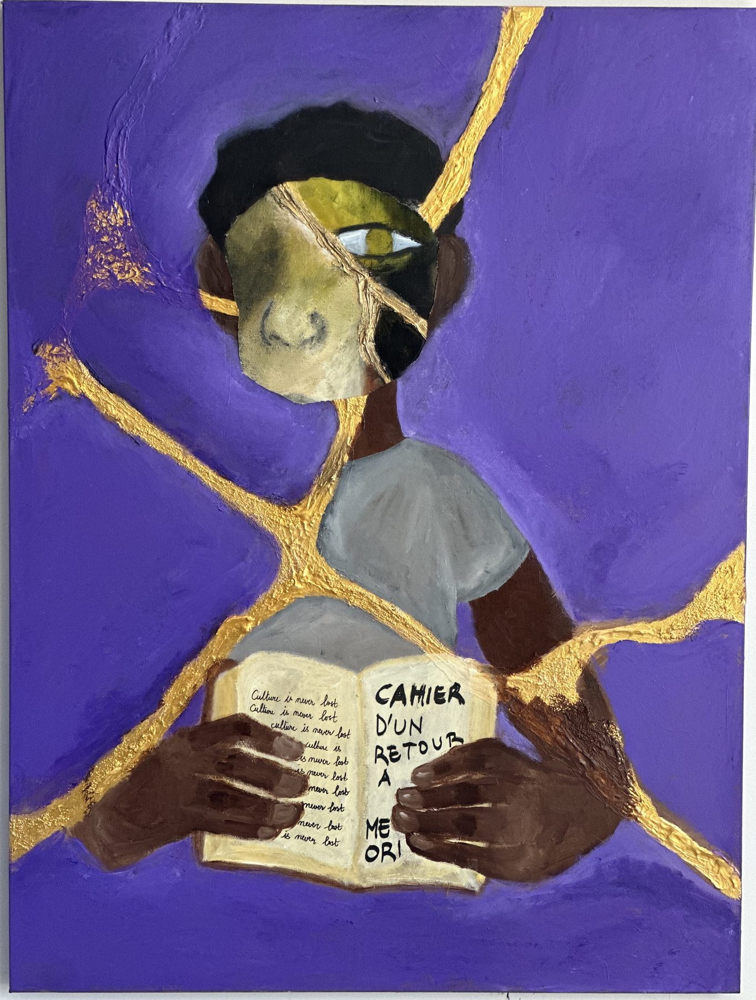
Cahier d'un retour au pays natal, 2026
Technique mixte sur toile
36 × 48 po
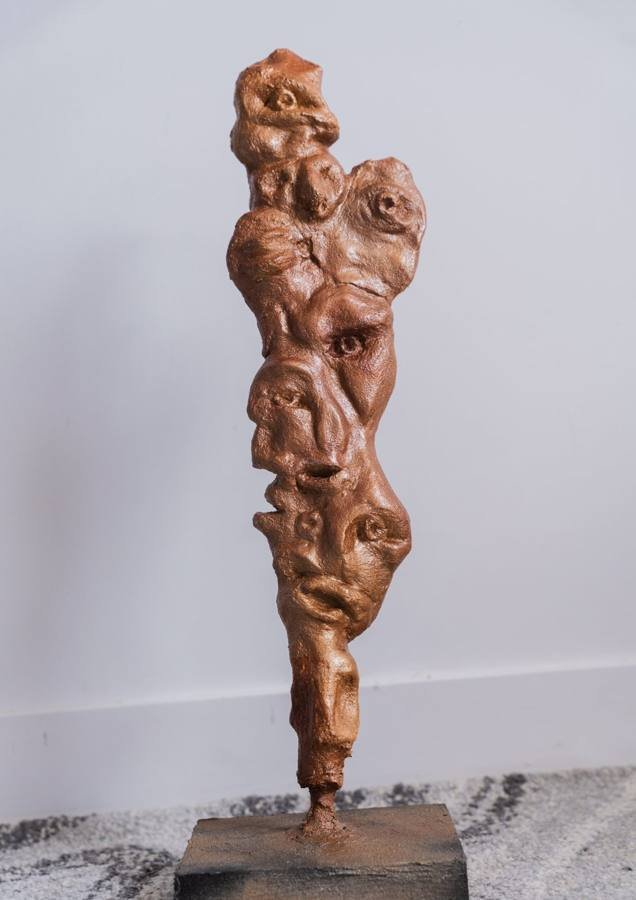
Identity Multiplicity Sculpture, 2026
Sculpture, effet bronze
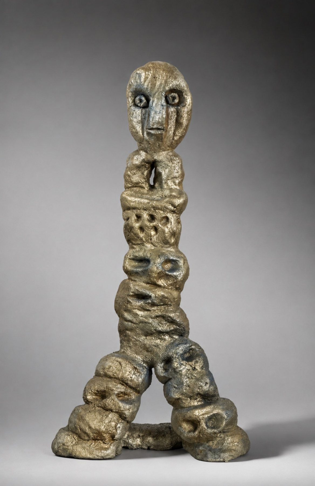
Vestiges identitaires 1, 2026
Technique mixte
36 × 48 po
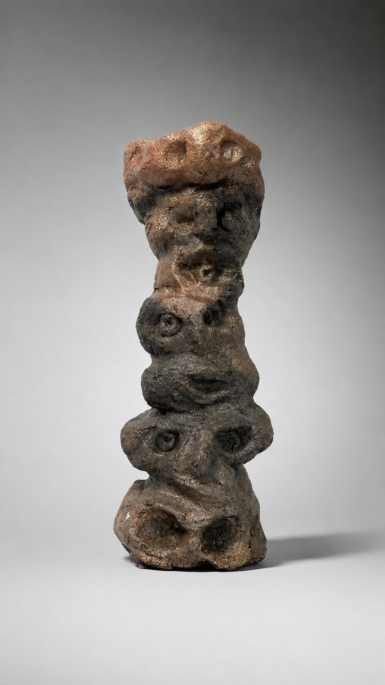
Vestiges identitaires 2, 2026
Technique mixte
36 × 48 po
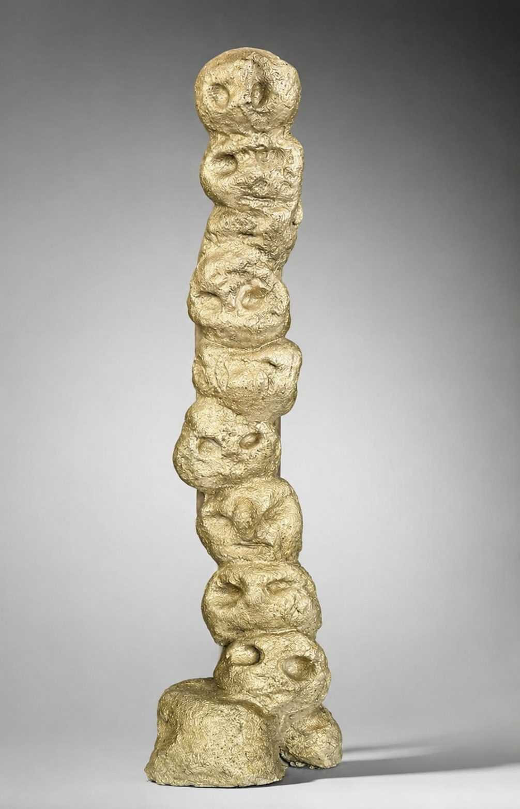
Vestiges identitaires 3, 2026
Technique mixte
36 × 48 po
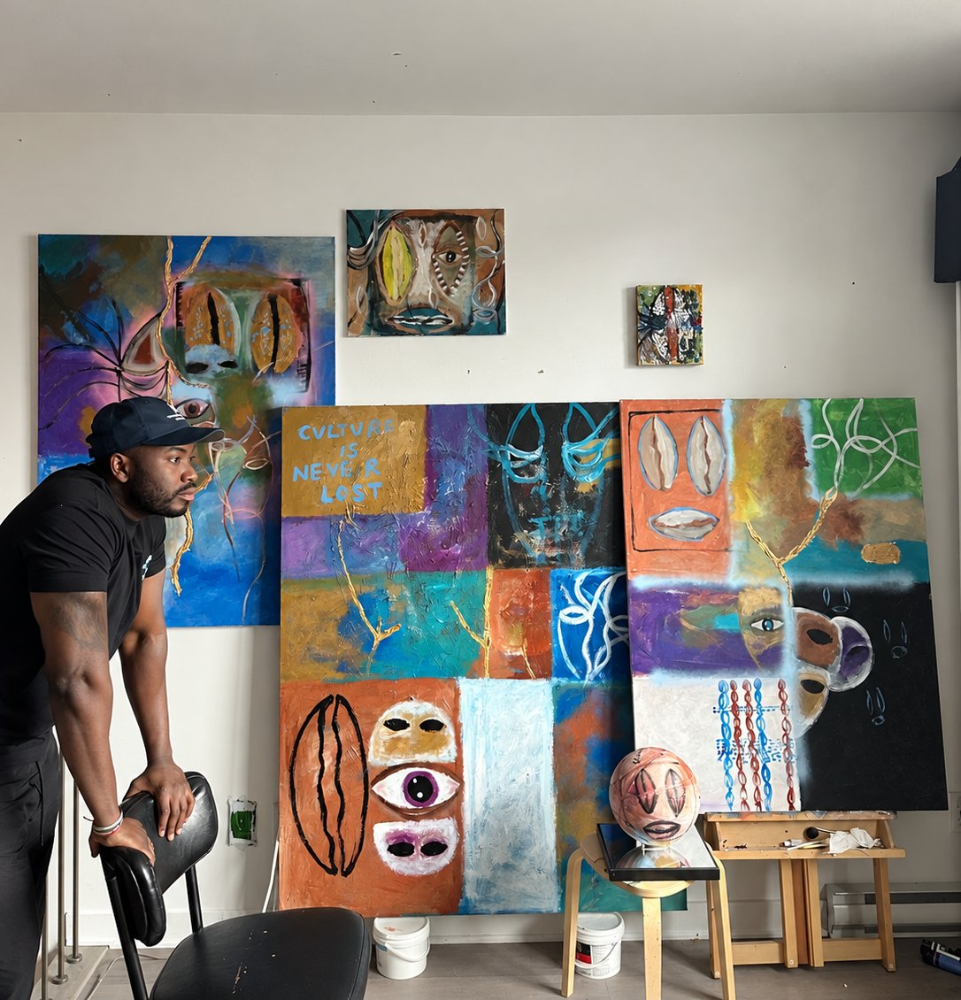
Cherif Mama est un artiste visuel né en Côte d’Ivoire, d’origine béninoise, et installé à Montréal. Il cartographie l’identité diasporique : ce que nos origines nous lèguent, ce que l’ailleurs nous donne, et les lignes d’or qui les relient.
Au fil des années, il a construit un langage visuel qui lui est propre : un ensemble de symboles qui circulent entre ses peintures et ses sculptures, comme les signes d’une même carte. Chacun marque un repère, une mémoire ou un chemin pour mieux se comprendre.
Les lignes dorées, elles, font écho à une philosophie : s’accepter tel qu’on est, dans son imperfection. Elles ne cachent pas les cassures, elles les recouvrent d’or.
Peu à peu, ce vocabulaire dessine un atlas personnel, qui parle aussi de tous ceux qui vivent entre plusieurs mondes.
Parallèlement, il explore l’intelligence artificielle comme partenaire de création, à la fois outil et objet de recherche. Il y questionne la place des artistes noirs dans les processus d’innovation en art, et la façon dont ces technologies peuvent élargir la création sans effacer les perspectives trop souvent laissées de côté.
Son travail invite à voir l’identité non pas comme une origine unique, mais comme une carte en mouvement, où plusieurs histoires cohabitent dans une même personne.
CHERIF MAMA (né en Côte d’Ivoire, d’origine béninoise) vit et travaille à Montréal, Canada.
Expositions solo : Coexistence, Montréal (2025). Expositions collectives : Miami Set 001, Miami (2025).
Court-métrage · environ 1 min · en finalisation
Un court-métrage poétique sur les lignes invisibles qui relient le Bénin à sa mémoire, ses générations et son identité, malgré les ruptures de l’Histoire.
Expérience VR / XR · teaser · recherche-création
Un premier teaser de l’expérience immersive. Le projet est en cours de développement — la description complète suivra.
Un essai personnel sur la multiplicité de l’identité — comment cesser de chercher à se définir par une seule chose (origines, culture, immigration) pour enfin accepter d’être fait de plusieurs couches à la fois, et ce que cette acceptation change dans le rapport aux autres.
Chaque époque transforme la manière dont les artistes créent. L’invention de la photographie, de la vidéo ou d’Internet a profondément modifié notre rapport aux images. Aujourd’hui, cette transformation porte un nom : l’intelligence artificielle. Pour certains, elle représente une menace. Pour d’autres, un simple outil. Pour moi, elle révèle surtout une question plus profonde : quelle place les artistes de la diaspora choisiront-ils d’occuper dans la construction du futur de la créativité ?
Nous parlons souvent de représentation. Nous voulons voir davantage d’artistes noirs dans les musées, les galeries, les collections et les biennales. Cette quête demeure essentielle. Mais une autre réalité émerge. Les technologies qui serviront à créer les œuvres de demain sont en train d’être imaginées aujourd’hui. Si nous voulons que nos histoires, nos sensibilités et nos imaginaires participent à ce futur, nous devons aussi être présents là où ces outils prennent forme.
L’intelligence artificielle ne transforme pas seulement la production des œuvres. Elle transforme les processus de création eux-mêmes. Elle influence la manière de rechercher, d’expérimenter, de raconter, de transmettre et même d’imaginer. Derrière chaque technologie se trouvent des choix humains : quelles références culturelles sont utilisées, quelles œuvres servent de modèles, quels récits deviennent visibles. Les outils ne sont jamais complètement neutres.
Être présent dans cette transformation ne signifie pas que chaque artiste doive devenir programmeur. En revanche, cela suppose de créer des ponts avec les chercheurs, les designers, les ingénieurs, les universités, les laboratoires de recherche et les entreprises qui développent les technologies créatives. Les artistes ont une manière particulière de poser des questions. Ils apportent une sensibilité, une mémoire et une vision du monde que la technique seule ne peut produire.
Cette réflexion nourrit également ma propre pratique. Mon travail explore les fragments d’identité, la mémoire et les liens invisibles qui unissent les individus. Pendant des années, la peinture, la sculpture et l’écriture ont constitué mes principaux langages. L’intelligence artificielle n’est pas venue les remplacer. Elle est venue ouvrir un nouvel espace de recherche. Je l’utilise pour explorer des archives, imaginer des installations, tester des mises en espace ou développer des expériences immersives avant de revenir à la matière. Plus j’avance dans cette démarche, plus une conviction s’impose : notre responsabilité ne consiste pas uniquement à utiliser ces outils, mais aussi à participer à leur évolution.
Les artistes noirs et afro descendants portent des expériences façonnées par les migrations, les héritages multiples, la mémoire et la résilience. Cette richesse ne doit pas seulement apparaître dans les œuvres. Elle peut également influencer les technologies qui permettront aux générations futures de créer. C’est là que se joue, selon moi, un nouvel enjeu de représentation.
L’avenir de l’art sera sans doute hybride. Il réunira la matière, le geste, les archives, les algorithmes et les expériences immersives. Dans ce contexte, les artistes qui participeront à la conception des outils auront une influence sur les formes artistiques de demain. Voilà pourquoi il est essentiel que les artistes de la diaspora prennent place dans ces espaces d’innovation.
Être représenté dans les œuvres demeure indispensable. Mais cela ne suffit plus. Nous devons aussi être présents là où s’invente le futur de la créativité. Non pour suivre le mouvement, mais pour contribuer à le définir.